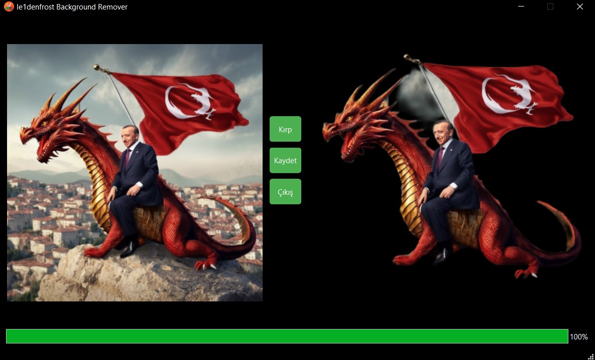

🌄RemBG ile Arka Plan Kaldırma Aracı Tasarla !
Bu rehberde, Pillow ve rembg kütüphanesini kullanarak basit ve etkili bir arka plan kaldırma uygulamasını nasıl oluşturacağımızı öğreneceğiz. Python ile GUI tabanlı bir uygulama tasarlarken Pyqt6 kütüphanesini kullanıyorum. Qt Designer ile kolayca tasarlanabiliyor ve geniş özellikler içeriyor. Siz dilerseniz bir konsol uygulaması veya Tkinter gibi alternatif GUI kütüphanelerini tercih edebilirsiniz."
1. Gereksinimler ve Kurulum
1.1. Gerekli Kütüphaneler
Öncelikle, gerekli kütüphaneleri kurmamız gerekiyor. Bu proje için PyQt6, Pillow ve rembg kütüphanelerine ihtiyacımız var. Aşağıdaki komutlarla bu kütüphaneleri kurabilirsiniz:
pip install pyqt6 pillow rembg
1.2. Proje Yapısı
Proje klasörümüzün yapısı bu şekilde olacak :
background_remover/
│
├── main.py
├── img/
│ ├── upload_image.jpg
│ └── output.png
└── app_icon.png
upload_image.jpg
2. PyQt6 ile Arayüzü Oluşturma
2.1. Temel Arayüz
PyQt6 kullanarak arayüzümüzü oluşturacağız. "main.py" dosyamıza kütüphaneleri çağırmakla başlayalım :
from PyQt6 import QtCore, QtGui, QtWidgets
from PIL import Image
import rembg
from PyQt6.QtWidgets import QMessageBox
import os
2.2. Arayüz Elemanları
Şimdi, arayüz elemanlarımızı ve temel yapılandırmamızı ekleyelim :
class Ui_MainWindow(object):
def setupUi(self, MainWindow):
MainWindow.setObjectName("MainWindow")
MainWindow.resize(949, 550)
MainWindow.setFixedSize(949, 550)
self.centralwidget = QtWidgets.QWidget(parent=MainWindow)
self.centralwidget.setObjectName("centralwidget")
palette = QtGui.QPalette()
palette.setColor(QtGui.QPalette.ColorRole.Window, QtGui.QColor(0, 0, 0))
palette.setColor(QtGui.QPalette.ColorRole.WindowText, QtGui.QColor(255, 255, 255))
MainWindow.setPalette(palette)
icon = QtGui.QIcon("app_icon.png")
MainWindow.setWindowIcon(icon)
self.label_1 = QtWidgets.QLabel(self.centralwidget)
self.label_1.setGeometry(QtCore.QRect(10, 10, 411, 481))
self.label_1.setObjectName("label_1")
self.label_1.setScaledContents(False)
self.label_1.setAlignment(QtCore.Qt.AlignmentFlag.AlignCenter)
self.label_1.setFrameShape(QtWidgets.QFrame.Shape.Box)
self.label_1.setFrameShadow(QtWidgets.QFrame.Shadow.Sunken)
self.label_1.setStyleSheet("border: 2px solid black;")
self.label_1.mousePressEvent = self.load_image
self.label_2 = QtWidgets.QLabel(self.centralwidget)
self.label_2.setGeometry(QtCore.QRect(490, 10, 451, 481))
self.label_2.setObjectName("label_2")
self.label_2.setScaledContents(False)
self.label_2.setAlignment(QtCore.Qt.AlignmentFlag.AlignCenter)
self.label_2.setFrameShape(QtWidgets.QFrame.Shape.Box)
self.label_2.setFrameShadow(QtWidgets.QFrame.Shadow.Sunken)
self.label_2.setStyleSheet("border: 2px solid black;")
self.pushButton = QtWidgets.QPushButton(self.centralwidget)
self.pushButton.setGeometry(QtCore.QRect(430, 160, 51, 41))
self.pushButton.setObjectName("pushButton")
self.pushButton.setStyleSheet("background-color: #4CAF50; color: white; border: 1px solid #4CAF50; border-radius: 5px;")
self.pushButton.clicked.connect(self.crop_image)
self.pushButton_2 = QtWidgets.QPushButton(self.centralwidget)
self.pushButton_2.setGeometry(QtCore.QRect(430, 210, 51, 41))
self.pushButton_2.setObjectName("pushButton_2")
self.pushButton_2.setStyleSheet("background-color: #4CAF50; color: white; border: 1px solid #4CAF50; border-radius: 5px;")
self.pushButton_2.clicked.connect(self.save_image)
self.pushButton_3 = QtWidgets.QPushButton(self.centralwidget)
self.pushButton_3.setGeometry(QtCore.QRect(430, 260, 51, 41))
self.pushButton_3.setObjectName("pushButton_3")
self.pushButton_3.setStyleSheet("background-color: #4CAF50; color: white; border: 1px solid #4CAF50; border-radius: 5px;")
self.pushButton_3.clicked.connect(MainWindow.close)
self.progressBar = QtWidgets.QProgressBar(self.centralwidget)
self.progressBar.setGeometry(QtCore.QRect(10, 500, 931, 23))
self.progressBar.setProperty("value", 0)
self.progressBar.setObjectName("progressBar")
MainWindow.setCentralWidget(self.centralwidget)
self.statusbar = QtWidgets.QStatusBar(parent=MainWindow)
self.statusbar.setObjectName("statusbar")
MainWindow.setStatusBar(self.statusbar)
self.retranslateUi(MainWindow)
QtCore.QMetaObject.connectSlotsByName(MainWindow)
self.crop_completion_signal = QtCore.pyqtSignal()
self.control_key = 0
self.started_image = QtGui.QPixmap('img/upload_image.jpg')
self.label_1.setPixmap(self.started_image)
self.remove_bg_thread = RemoveBackgroundThread('', '')
self.remove_bg_thread.error_signal.connect(self.show_error_dialog)
def retranslateUi(self, MainWindow):
_translate = QtCore.QCoreApplication.translate
MainWindow.setWindowTitle(_translate("MainWindow", "le1denfrost Background Remover"))
self.pushButton.setText(_translate("MainWindow", "Kırp"))
self.pushButton_2.setText(_translate("MainWindow", "Kaydet"))
self.pushButton_3.setText(_translate("MainWindow", "Çıkış"))
3. Arka Plan Kaldırma İşlemi
3.1. İş Parçacığı (Thread) Oluşturma
Arka plan kaldırma işlemi uzun sürebileceği için bu işlemi ayrı bir iş parçacığında gerçekleştireceğiz. İş parçacığını oluşturmak için "RemoveBackgroundThread" sınıfını tanımlayalım :
class RemoveBackgroundThread(QtCore.QThread):
progress_changed = QtCore.pyqtSignal(int)
crop_completion_signal = QtCore.pyqtSignal()
error_signal = QtCore.pyqtSignal(str)
def __init__(self, input_path, output_path):
super().__init__()
self.input_path = input_path
self.output_path = os.path.join('img', output_path)
def run(self):
try:
if os.path.exists(self.output_path):
os.remove(self.output_path)
with Image.open(self.input_path) as img:
img = img.convert("RGBA")
output = rembg.remove(img)
output = output.resize(img.size, Image.LANCZOS)
final_output = Image.new("RGBA", img.size, (0, 0, 0, 0))
final_output.paste(output, (0, 0), output)
final_output.save(self.output_path)
progress_value = 0
while progress_value < 100:
progress_value += 1
self.progress_changed.emit(progress_value)
QtCore.QThread.msleep(50)
self.progress_changed.emit(100)
self.crop_completion_signal.emit()
except Exception as e:
self.error_signal.emit(f"Hata oluştu: {str(e)}")
3.2. İşlevleri Bağlama
Şimdi arayüz elemanlarını tanımladığımız ana sınıfımızın altına ("Ui_MainWindow") iş parçacığını başlatacak ve ilerleme çubuğunu güncelleyecek işlevleri tanımlayalım :
def load_image(self, event):
file_dialog = QtWidgets.QFileDialog()
self.file_path, _ = file_dialog.getOpenFileName(parent=None, caption="Resim Seç", directory="",
filter="Resim Dosyaları (*.png *.jpg *.bmp *.jpeg)")
if self.file_path:
original_image = QtGui.QPixmap(self.file_path)
scaled_image = original_image.scaled(self.label_1.size(), QtCore.Qt.AspectRatioMode.KeepAspectRatio, QtCore.Qt.TransformationMode.SmoothTransformation)
self.label_1.setPixmap(scaled_image)
if self.control_key == 1:
self.label_2.clear()
if not self.file_path:
self.label_1.setPixmap(self.started_image)
self.control_key = 1
def update_progress(self, value):
self.progressBar.setValue(value)
def show_cropped_image(self):
result_image = QtGui.QPixmap('img/output.png')
scaled_image = result_image.scaled(self.label_2.size(), QtCore.Qt.AspectRatioMode.KeepAspectRatio, QtCore.Qt.TransformationMode.SmoothTransformation)
self.label_2.setPixmap(scaled_image)
def crop_image(self):
try:
if not hasattr(self, 'file_path') or not self.file_path:
self.show_error_dialog("Lütfen önce bir resim seçin.")
return
self.remove_bg_thread = RemoveBackgroundThread(self.file_path, 'output.png')
self.remove_bg_thread.progress_changed.connect(self.update_progress)
self.remove_bg_thread.crop_completion_signal.connect(self.enable_save_button)
self.remove_bg_thread.finished.connect(self.show_cropped_image)
self.remove_bg_thread.start()
except Exception as e:
self.show_error_dialog(f"Hata oluştu: {str(e)}")
def enable_save_button(self):
self.pushButton_2.setEnabled(True)
4. Resmi Kaydetme ve Hata Yönetimi
4.1. Resmi Kaydetme
Kullanıcının kırpılmış resmi kaydedebilmesi için ana sınıfın altına bir işlev ekleyelim :
def save_image(self):
try:
if not hasattr(self, 'file_path') or not self.file_path or not os.path.exists('img/output.png'):
self.show_error_dialog("Lütfen önce bir resmi kırpın.")
return
file_dialog = QtWidgets.QFileDialog()
file_path, _ = file_dialog.getSaveFileName(parent=None, caption="Resmi Kaydet", directory="",
filter="PNG Dosyaları (*.png)")
if file_path:
result_image = QtGui.QPixmap('img/output.png')
result_image.save(file_path, "PNG")
QMessageBox.information(None, "Başarı", "Kaydetme işlemi tamamlandı.")
self.label_1.setPixmap(self.started_image)
self.label_2.clear()
os.remove('img/output.png')
self.file_path = ""
except Exception as e:
self.show_error_dialog(f"Hata oluştu: {str(e)}")
4.2. Hata Yönetimi
Kullanıcıya hataları göstermek için ana sınıfın altına bir hata diyalogu ekleyelim :
def show_error_dialog(self, message):
QMessageBox.critical(None, "Hata", message)
5. Uygulamayı Çalıştırma
Son olarak, ana uygulamayı çalıştırmak için "main.py" dosyasının sonuna aşağıdaki kodu ekleyelim :
if __name__ == "__main__":
import sys
app = QtWidgets.QApplication(sys.argv)
MainWindow = QtWidgets.QMainWindow()
ui = Ui_MainWindow()
ui.setupUi(MainWindow)
MainWindow.show()
sys.exit(app.exec())
Sonuç

RemBG ve Pillow kütüphanelerini kullanarak bir arka plan kaldırma uygulaması oluşturmayı öğrenmiş olduk. Uygulamayı geliştirirken birkaç önemli noktaya değindik :
Thread (İş Parçacığı) Kullanımı
Uygulamamızda, arka plan kaldırma işlemi zaman alabileceğinden ve bu işlemin ana iş parçacığını engelleyip uygulamanın donmasına neden olabileceğinden, arka plan kaldırma işlemlerini iş parçacığında (thread) gerçekleştirdik. İş parçacıkları, uzun süren işlemleri arka planda çalıştırarak kullanıcı arayüzünün (UI) tepkisel kalmasını sağlar.
Sinyallerin Önemi
PyQt6'da sinyaller, iş parçacıkları arasındaki iletişimi ve arayüzün güncellenmesini sağlamak için kullanılır. Örneğin, işlem ilerlemesini kullanıcıya göstermek için progress_changed sinyalini kullandık ve iş parçacığı tamamlandığında crop_completion_signal sinyalini kullanarak UI'yi güncelledik. Sinyaller, GUI uygulamalarında olayların ve durum değişikliklerinin işlenmesi için güçlü bir mekanizma sunar.
Hata Yönetimi
Uygulamada kullanıcı deneyimini iyileştirmek için hata yönetimine de önem verdik. Herhangi bir hata oluştuğunda kullanıcıya bilgilendirici hata mesajları göstererek, kullanıcıların neyin yanlış gittiğini anlamalarını sağladık.